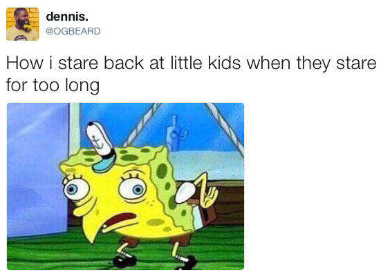
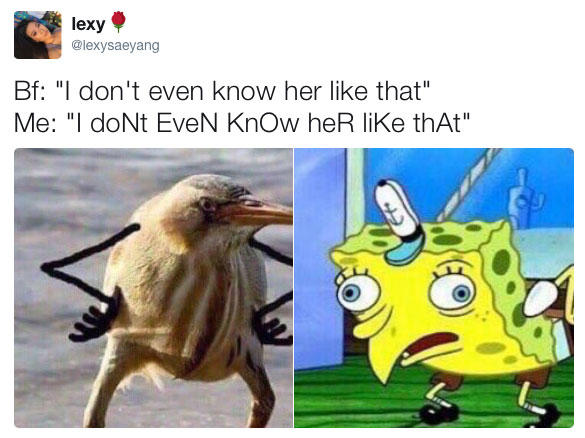
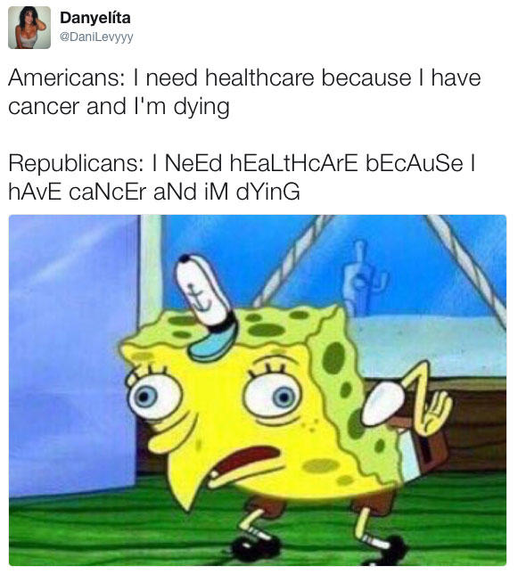

Mocking SpongeBob, also known as Spongemock, refers to an image macro featuring cartoon character SpongeBob SquarePants in which people use a picture of SpongeBob to indicate a mocking tone towards an opinion or point of view.
The image of SpongeBob used for this series comes from the episode of the animated comedy series SpongeBob SquarePants called "Little Yellow Book," which first aired on November 25th, 2012. In the episode, Squidward reads SpongeBob's diary, where he discovers that whenever SpongeBob sees plaid, he acts like a chicken.
The earliest iteration of the scene being used as a meme occurred on May 4th, 2017. Twitter user @OGBEARD posted a screenshot of the scene where SpongeBob acts like a chicken with the caption "How i stare back at little kids when they stare for too long." The tweet (shown below) has received more than 73,000 retweets and 147,300 likes in five days.
On May 5th, Twitter user @lexysaeyang posted the same screenshot (shown below), adding a call-and-response element to the meme, creating the effect that SpongeBob's face and the alternation of uppercase and lowercase text represents a mocking tone. The tweet, which put the SpongeBob picture next to a picture of a bird with arms, received more than 37,100 retweets and 86,600 likes.
On May 6th, Twitter user @DaniLevyyy posted a variation on the meme (shown below), which removed the second picture, and made a single image macro with the caption "Americans: I need healthcare because I have cancer and I'm dying. Republicans: I NeEd hEaLtHcArE bEcAuSe I hAvE caNcEr aNd iM dYinG." The tweet received more than 86,900 retweets and 208,400 likes. In the coming days, several news sites published pieces on the meme, including The Daily Dot, Crave, Teen Vogue and Mashable.
